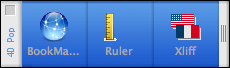

|
|
||||
|
|
||||
4DPop Bookmarks manages your bookmarks (and more) from your development environment.
Place the "4DPop_Bookmarks.4dbase" folder or an alias of this folder in the "Components" folder next to the structure file of your database.
If you are using the "4DPop"component, the "Bookmark" tool will automatically appear in the tool palette; simply click on it in order to display and use it.
4DPop Bookmarks displays a menu built from a list of bookmarks. Selecting one of the bookmarks launches the associated URL in the default browser.

You can modify the default list of bookmarks by selecting the last menu item: "Edit BookMarks List..."

Adding bookmarks can be done by dragging and dropping from the desktop (file, folder or disk), from your browser (e-mail address and URL) or from a text area. The dragged item is analyzed and the menu item created automatically indicates its type by associating a specific icon with it.
It is possible to remove an item by selecting it and clicking on the "-" button ("delete" shortcut).
You can edit the bookmark name or its URL by double-clicking on the part you want to modify. You can also reorder the items by dragging and dropping, or sort the items by column headers.
Note: A bookmark that begins with a dash ("-") will be displayed as a separator line in the menu.
This component is provided in compiled version but you can find the source code in the "Sources" folder that is located inside the component folder.